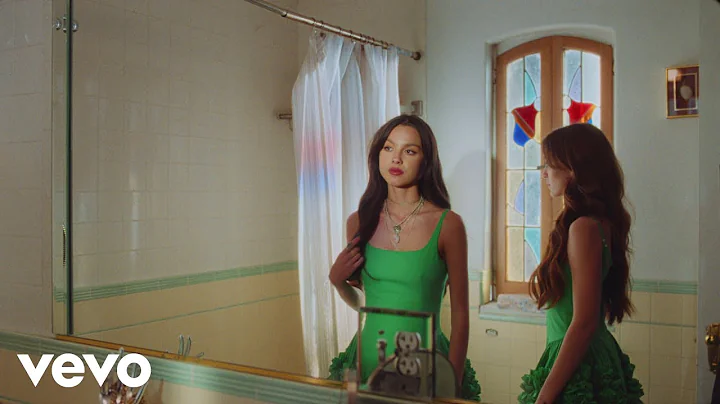
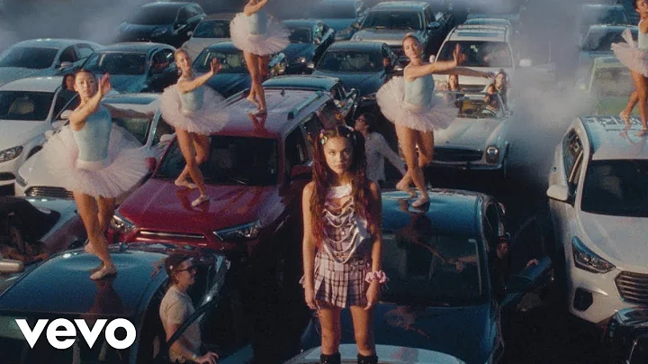
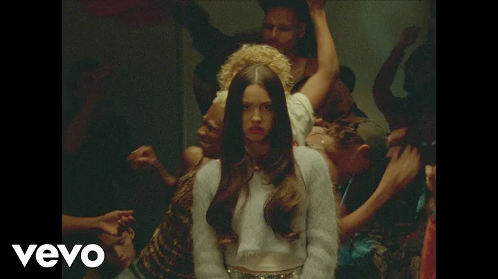

-

de javu
This track explores the feeling of watching an ex recreate old memories with someone new, using vivid storytelling and playful production elements.
469M views
-

drivers license
This breakout hit skyrocketed Olivia to fame, telling a heartfelt story of heartbreak and longing, capturing raw vulnerability.
552M views
-

brutal
A fast-paced, edgy song, "Brutal" conveys Olivia's anxieties about growing up, fame, and societal expectations.
61M views
-

bad idea right?
This playful song explores making a questionable decision to meet up with an ex despite knowing it's a bad idea.
43M views